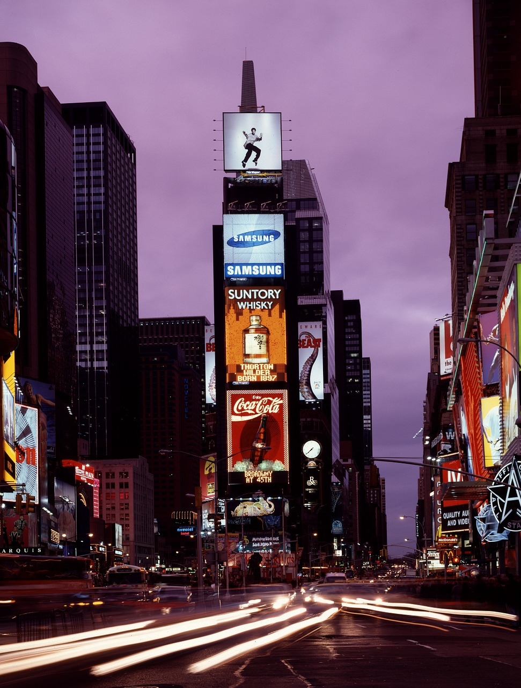
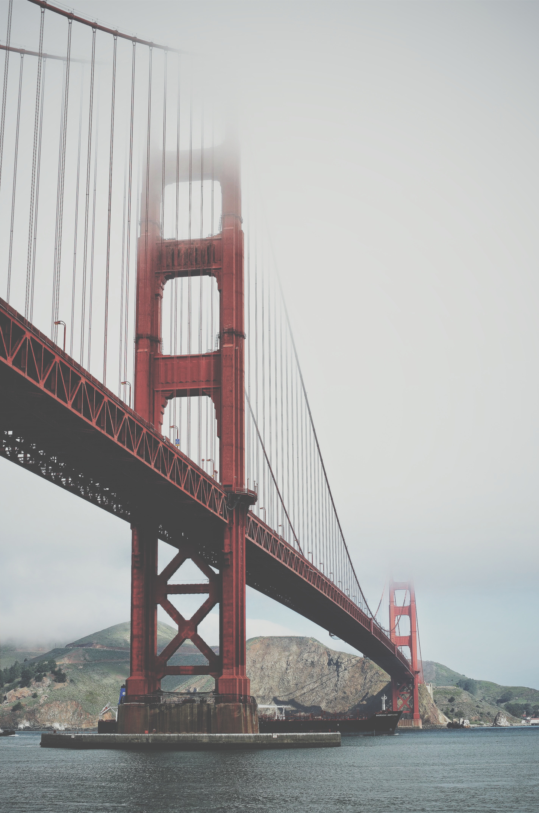

Statue of Liberty
New York
The Statue of Liberty is a figure of a robed woman representing Libertas, a Roman liberty goddess - also incorporating some elements reminiscent of another Roman deity, Sol Invictus. She holds a torch above her head with her right hand, and in her left hand carries a tabula ansata inscribed in Roman numerals with "JULY IV MDCCLXXVI" (July 4, 1776), the date of the U.S. Declaration of Independence. A broken chain lies at her feet. The statue became an icon of freedom and of the United States, and was a welcoming sight to immigrants arriving from abroad.
Brooklyn Bridge
New York
The Brooklyn Bridge is a hybrid cable-stayed/suspension bridge in New York City and is one of the oldest roadway bridges in the United States. Started in 1869 and completed fourteen years later in 1883, it connects the boroughs of Manhattan and Brooklyn, spanning the East River. It has a main span of 1,595.5 feet (486.3 m) and was the first steel-wire suspension bridge constructed. It was originally called the New York and Brooklyn Bridge and the East River Bridge, but it was later dubbed the Brooklyn Bridge, a name coming from an earlier January 25, 1867, letter to the editor of the Brooklyn Daily Eagle[8] and formally so named by the city government in 1915.
Empire state building
New York
The Empire State Building is a 102-story Art Deco skyscraper on Fifth Avenue between West 33rd and 34th Streets in Midtown Manhattan, New York City. Designed by Shreve, Lamb & Harmon, the building has a roof height of 1,250 feet (380 m), and with its antenna included, it stands a total of 1,454 feet (443.2 m) tall. Its name is derived from "Empire State", the nickname for New York. As of 2017 the Empire State Building is the fifth-tallest completed skyscraper in the United States and the 28th-tallest in the world. It is also the sixth-tallest freestanding structure in the Americas.
Grand Central
Terminal
Terminal
New York
Grand Central Terminal is a commuter and intercity railroad terminal at 42nd Street and Park Avenue in Midtown Manhattan in New York City, United States. The terminal serves commuters traveling on the Metro-North Railroad to Westchester, Putnam, and Dutchess counties in New York, as well as to Fairfield and New Haven counties in Connecticut. The terminal also contains a connection to the New York City Subway at Grand Central–42nd Street. Grand Central Terminal has intricate designs both on its inside and outside, lending to its landmark designations, including as a U.S. National Historic Landmark. The terminal is one of the world's most visited tourist attractions, with 21.9 million visitors in 2013.

Central
Park
Park
New York
Central Park is an urban park in Manhattan, New York City, U.S. state of New York. It comprises 843 acres (341 ha) between the Upper West Side and Upper East Side, roughly bounded by Fifth Avenue on the east, Central Park West (Eighth Avenue) on the west, Central Park South (59th Street) on the south, and Central Park North (110th Street) on the north. Central Park is the most visited urban park in the United States, with 40 million visitors in 2013, and one of the most filmed locations in the world.
Gateway
arch
arch
Missouri
The Gateway Arch is a 630-foot (192 m) monument in St. Louis in the U.S. state of Missouri. Clad in stainless steel and built in the form of a weighted catenary arch, it is the world's tallest arch, the tallest man-made monument in the Western Hemisphere, and Missouri's tallest accessible building. Built as a monument to the westward expansion of the United States,and officially dedicated to "the American people," it is the centerpiece of the Jefferson National Expansion Memorial and has become an internationally recognized symbol of St. Louis, as well as a popular tourist destination.
Mount
Rushmore
Rushmore
South Dakota
Mount Rushmore National Memorial is a sculpture carved into the granite face of Mount Rushmore, a batholith in the Black Hills in Keystone, South Dakota, United States. Sculptor Gutzon Borglum created the sculpture's design and oversaw the project's execution from 1927 to 1941 with the help of his son, Lincoln Borglum. Mount Rushmore features 60-foot (18 m) sculptures of the heads of four United States presidents: George Washington (1732–1799), Thomas Jefferson (1743–1826), Theodore Roosevelt (1858–1919), and Abraham Lincoln (1809–1865). The memorial park covers 1,278.45 acres (2.00 sq mi; 5.17 km2) and is 5,725 feet (1,745 m) above sea level.

Times
Square
Square
New York
Times Square is a major commercial intersection, tourist destination, entertainment center and neighborhood in the Midtown Manhattan section of New York City at the junction of Broadway and Seventh Avenue. It stretches from West 42nd to West 47th Streets. Brightly adorned with billboards and advertisements, Times Square is sometimes referred to as "The Crossroads of the World", "The Center of the Universe","the heart of The Great White Way", and the "heart of the world".One of the world's busiest pedestrian areas, it is also the hub of the Broadway Theater District and a major center of the world's entertainment industry.

Golden Gate
Bridge
Bridge
California
The Golden Gate Bridge is a suspension bridge spanning the Golden Gate, the one-mile-wide (1.6 km) strait connecting San Francisco Bay and the Pacific Ocean. The structure links the American city of San Francisco, California – the northern tip of the San Francisco Peninsula – to Marin County, carrying both U.S. Route 101 and California State Route 1 across the strait. The bridge is one of the most internationally recognized symbols of San Francisco, California, and the United States. It has been declared one of the Wonders of the Modern World by the American Society of Civil Engineers.
Niagra Falls
New York
Niagara Falls (/naɪˈæɡrə/) is the collective name for three waterfalls that straddle the international border between Canada and the United States; more specifically, between the province of Ontario and the state of New York. They form the southern end of the Niagara Gorge.
White House
Washington
The residence was designed by Irish-born architect James Hoban in the neoclassical style. Construction took place between 1792 and 1800 using Aquia Creek sandstone painted white. When Thomas Jefferson moved into the house in 1801, he (with architect Benjamin Henry Latrobe) added low colonnades on each wing that concealed stables and storage.In 1814, during the War of 1812, the mansion was set ablaze by the British Army in the Burning of Washington, destroying the interior and charring much of the exterior. Reconstruction began almost immediately, and President James Monroe moved into the partially reconstructed Executive Residence in October 1817. Exterior construction continued with the addition of the semi-circular South portico in 1824 and the North portico in 1829.

Grand
Canyon
Canyon
Arizona
Nearly two billion years of Earth's geological history have been exposed as the Colorado River and its tributaries cut their channels through layer after layer of rock while the Colorado Plateau was uplifted.While some aspects about the history of incision of the canyon are debated by geologists, several recent studies support the hypothesis that the Colorado River established its course through the area about 5 to 6 million years ago. Since that time, the Colorado River has driven the down-cutting of the tributaries and retreat of the cliffs, simultaneously deepening and widening the canyon.